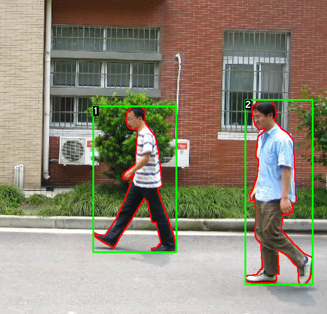
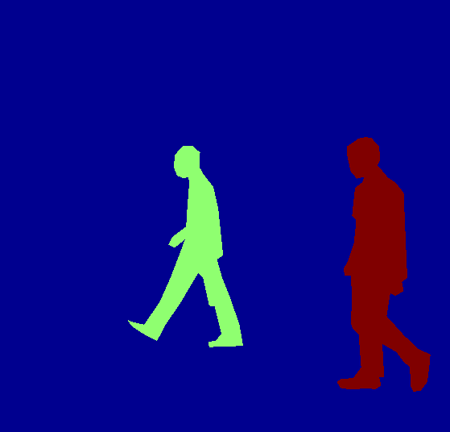
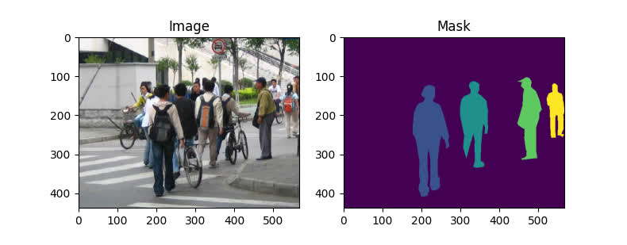

9.1 Object Detection
TorchVision Object Detection Finetuning Tutorial
Created Date: 2025-06-20
For this tutorial, we will be finetuning a pre-trained Mask R-CNN model on the Penn-Fudan Database for Pedestrian Detection and Segmentation . It contains 170 images with 345 instances of pedestrians, and we will use it to illustrate how to use the new features in torchvision in order to train an object detection and instance segmentation model on a custom dataset.


Figure 1 - Sample Image and Labeded Mask
9.1.1 Defining the Dataset
The reference scripts for training object detection, instance segmentation and person keypoint detection allows for easily supporting adding new custom datasets. The dataset should inherit from the standard torch.utils.data.Dataset class, and implement __len__ and __getitem__ .
The only specificity that we require is that the dataset __getitem__ should return a tuple:
image: torchvision.tv_tensors.Image of shape
.[3, H, W], a pure tensor, or a PIL Image of size(H, W)-
target: a dict containing the following fields - boxes, labels, image_id, area, iscrowd and masks.
File penn_fundan_dataset.py write a dataset for the PennFudan dataset. First, finetunning.py download the dataset and extract the zip file:
file_path = download.download(url,
sha1_hash='88474aa75cc41dbb8d3c76d2f3c818e79fa0438d')
print(file_path)
base_name = os.path.splitext(os.path.basename(file_path))[0]
extract_dir = os.path.join(os.path.dirname(file_path), base_name)
with zipfile.ZipFile(file_path, 'r') as zip_ref:
names = zip_ref.namelist()
top_level_dirs = {name.split('/')[0] for name in names if '/' in name}
if len(top_level_dirs) == 1 and base_name in top_level_dirs:
zip_ref.extractall(os.path.dirname(file_path))
os.rename(os.path.join(os.path.dirname(file_path), base_name), extract_dir)
else:
os.makedirs(extract_dir, exist_ok=True)
zip_ref.extractall(extract_dir)We have the following folder structure:
PennFudanPed/
PedMasks/
FudanPed00001_mask.png
FudanPed00002_mask.png
FudanPed00003_mask.png
FudanPed00004_mask.png
...
PNGImages/
FudanPed00001.png
FudanPed00002.png
FudanPed00003.png
FudanPed00004.png
Here is one example of a pair of images and segmentation masks:
image = torchvision.io.read_image(os.path.join(extract_dir, 'PNGImages/FudanPed00046.png'))
mask = torchvision.io.read_image(os.path.join(extract_dir, 'PedMasks/FudanPed00046_mask.png'))
pyplot.figure(figsize=(8, 4))
pyplot.subplot(121)
pyplot.title('Image')
pyplot.imshow(image.permute(1, 2, 0))
pyplot.subplot(122)
pyplot.title('Mask')
pyplot.imshow(mask.permute(1, 2, 0))
pyplot.show()
Figure 2 - FudanPed Random Sample
9.1.2 Defining your model
In this tutorial, we will be using Mask R-CNN, which is based on top of Faster R-CNN. Faster R-CNN is a model that predicts both bounding boxes and class scores for potential objects in the image.
Mask R-CNN adds an extra branch into Faster R-CNN, which also predicts segmentation masks for each instance.